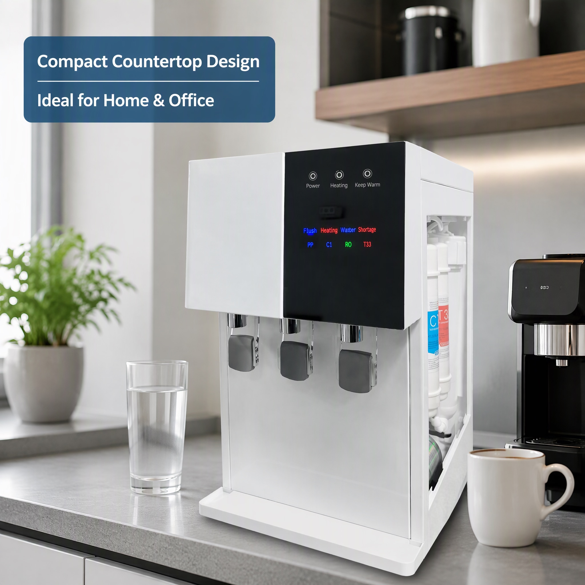

للعلامات التجارية والموزعين
طوّر مجموعة موزعات مياه مكتبية بالتناضح العكسي بنظام OEM، بهيكل مدمج وتبريد بالضاغط وشاشة تحكم قابلة للتخصيص. ناقش مع المصنع العلامة الخاصة والتغليف وسعة الغشاء ومتطلبات السوق المستهدفة.
E500-TS-1 (B/W) · OEM / علامة خاصة
موزع مياه بالتناضح العكسي متصل بشبكة المياه، مع تبريد بالضاغط وشاشة ذكية كبيرة وخيار منفذين أو ثلاثة منافذ للمياه. اختر 100 أو 200 GPD وناقش التهيئة التي يحتاجها عملاؤك.
لست متأكدًا من التهيئة المناسبة؟ أرسل تفاصيل الاستخدام وسنساعدك في تحديدها.

مراجع التصميم من المصنع
تعرض هذه الرسوم الخمسة من المصنع تصاميم بثلاثة منافذ. يمكن مناقشة منفذين أو ثلاثة منافذ لطلبك. لا تحدد الرسوم المرجعية وظائف الطلب أو أداءه.




اختيار أوضح
طوّر مجموعة موزعات مياه مكتبية بالتناضح العكسي بنظام OEM، بهيكل مدمج وتبريد بالضاغط وشاشة تحكم قابلة للتخصيص. ناقش مع المصنع العلامة الخاصة والتغليف وسعة الغشاء ومتطلبات السوق المستهدفة.
خطط لنقطة مياه شرب ساخنة وباردة حيث تتوفر شبكة المياه والتصريف والكهرباء. أخبرنا بعدد المستخدمين المتوقع والطلب وقت الذروة للتحقق من التهيئة المناسبة.
التهيئة
التبريد بالضاغط والتحكم الذكي وقياس TDS هي عناصر التهيئة المقترحة للتصدير. تُعتمد الوظائف الإضافية حسب طلبك.
يمكن إضافة الكمية والمتطلبات التفصيلية في نموذج الاستفسار.
تصف هذه الخيارات الإنتاج اليومي الاسمي للغشاء، وليس التدفق اللحظي من الصنبور. يعتمد الإنتاج الفعلي على ظروف مياه التغذية والتهيئة النهائية للنظام.
يمكن مناقشة العلامة التجارية ولغة الشاشة والوظائف الإضافية. إنترنت الأشياء والوظيفة المضادة للبكتيريا خياران إضافيان؛ ويُؤكد التنفيذ والتوافق وأي مستندات اختبار داعمة قبل الطلب.
التغذية الكهربائية والقابس، وأداء المياه الساخنة والباردة، وسعات التخزين، والمستهلكات، وكمية الطلب، ومدة التوريد، ووثائق السوق المستهدفة.
شاشة ذكية
يتوفر قياس TDS في هذا الطراز. توضح التسميات الإنجليزية حالات التشغيل؛ ويمكن تكييف لغة الشاشة والوظائف الاختيارية مع مشروعك.

مثال لشاشة قابلة للتخصيص. الأرقام التي تضيء جميع القطاعات، مثل 188°C و888، رسوم توضيحية وليست قياسات أو ادعاءات أداء. مؤشرات إنترنت الأشياء ومكافحة البكتيريا تخص تهيئات اختيارية. لا يكفي TDS وحده لإثبات سلامة مياه الشرب.
المؤقت · إنترنت الأشياء · انخفاض المياه · الأسبوع · الأيام المتبقية · تشغيل / إيقاف · مياه التغذية · مياه منقاة · TDS / PPM · تنقية · شطف · صرف المياه · مكافحة البكتيريا · تسخين · حفظ الحرارة · سحب المياه · تبريد · مستوى المياه.
تناضح عكسي بأربع مراحل
تعتمد فترات الاستبدال على جودة المياه والاستخدام والخراطيش المختارة. اطلب طقم الاستبدال المتوافق وتعليمات الصيانة مع عرض السعر.

مواصفات المنتج
| نوع المنتج | موزع مياه مكتبي بالتناضح العكسي متصل بشبكة المياه |
|---|---|
| التبريد | تبريد بالضاغط مع تحكم ذكي |
| خيارات غشاء التناضح العكسي | 100 GPD / 200 GPD |
| الترشيح | PP وCTO وRO وT33 |
| الأبعاد (العرض × العمق × الارتفاع) | 295 × 440 × 520 مم |
| ارتفاع مساحة الصرف | 245 مم (رسم مرجعي) |
| منافذ المياه | اثنان / ثلاثة |
| الشاشة | شاشة ذكية كبيرة مع قياس TDS |
| توصيلات التغذية | شبكة مياه وتصريف التناضح العكسي وتغذية كهربائية مؤرضة |
| خيارات OEM | العلامة التجارية والتغليف وشاشة باللغة المحلية؛ وظائف إضافية بالاتفاق |
أكد الجهد والقدرة المقننة وسعات الخزانات ونطاقات الحرارة وأداء الصرف وقت الذروة في مواصفات الطلب.

قبل التركيب
هذا موزع مكتبي بالتناضح العكسي متصل بشبكة المياه. يحتاج إلى تغذية من الشبكة ووصلة منفصلة لتصريف المياه المركزة ومقبس كهربائي مؤرض مناسب.

01 · مدخل المياه
توصيل شبكة المياه بالمدخل المحدد.
02 · مخرج تصريف التناضح العكسي
خط منفصل للمياه المركزة إلى تصريف مناسب.
03 · تغذية كهربائية مؤرضة
طابق التغذية الكهربائية والقابس مع طلبك.

أسئلة المشترين
نعم. يتصل بشبكة المياه وتصريف منفصل للمياه المركزة من التناضح العكسي وتغذية كهربائية مؤرضة مناسبة. ليس موزعًا يُملأ يدويًا دون تركيب.
يتوفر الخياران للغشاء. تشير GPD إلى الإنتاج اليومي الاسمي للغشاء، وليس سرعة الصرف من الصنبور. تؤثر ظروف مياه التغذية والتهيئة النهائية في الإنتاج.
التبريد بالضاغط مع التحكم الذكي هو التهيئة المقترحة للتصدير. ناقش المتطلبات الخاصة مع المصنع.
نعم. ناقش علامتك وتغليفك ولغة الشاشة والكمية المطلوبة والسوق المستهدفة. يُؤكد الحد الأدنى للطلب ومدة التوريد ووثائق الطلب في عرض السعر.
يتوفر قياس TDS. إنترنت الأشياء والوظيفة المضادة للبكتيريا تخصيصات اختيارية؛ والواجهة المعروضة مثال. أكد الوظائف المنفذة والوثائق الداعمة لطلبك.
ابدأ ببيانات الاتصال والاستخدام المقصود. أضف خيار الغشاء المفضل والكمية التقريبية والوجهة واحتياجات التخصيص عند توفرها. يمكنك طلب المساعدة في اختيار التهيئة.
اطلب طقم استبدال PP وCTO وRO وT33 المتوافق وتعليمات الصيانة. تعتمد فترات الاستبدال على جودة مياه التغذية والاستخدام والخراطيش المطلوبة.
لنحدد تهيئة E500-TS-1 المناسبة لك
أخبرنا بالاستخدام والكمية والوجهة. سنساعدك في اختيار التهيئة.